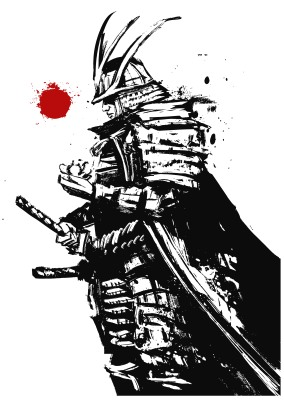

Kenneth Fisher
Disability Analyst 2.5
As a Disbility Analyst, my job requires me to review and develope social security disability cases for Social Security Disability applicants. My job requires me to process claims of different levels/types including: initial, reconsideration, continuing developmental review (CDR), expediated reinstatement review (EXR), pre-hearing claims, and age 18 reconsideration claims.
To process a claim I need to request the medical records, contact the claimant about obtain medical sources, attending examinations, or filling out activity of daily living forms in over the phone. I must perform analysis of medical records and functional documentation from a variety of sources in order to project limitations that impact the claimant's ability to peform past work activities. I must also peform a detailed work history analysis of past and current education and skills, to determine if any of them fall within the claimant's functional limitations.
Featured Projects
View selected projects below. More information can be found at A Separate Society.
The Book of Dev'ra'si
A story set in a fantasy land, the Book of Dev'ra'si is an epic story about Locke Koll, a former knight turned outlaw after an violent encounter to save his childhood sweetheart put him at odds with/ the knighthood, its leadership, and the kingdom he served. With that life behind him, he must journey the world in search of the one item in the world that can possibly set things to right again, the only hitch: it's just a myth.
The Book of Dev'ra'siThe Blade Once Broken.
The Blade One Broken is Toshiro Ogawa's highly anticipated debut novel featuring a lone Ronin warrior who is searching the countryside of ancient Japan for the demon warrior who killed his family. Having tasted defeat first hand, he wrestles with his own doubt at this abilities, while he battles for revenge for the death of his family, and the restoration of his honor as a warrior.
The Blade Once BrokenWork Experience
Optional paragraph for work experience summary. Not a part of the job details. Delete if not being used.
Disability Analyst 2.5
Disability Determination Services
09/2007 - Present
Job summary goes here. Add as many paragraphs as you need.
Optional list:
Education
University of Texas @ Arlington
Bacherlors of Arts - English, year 2004
Awarded BA of Arts degree in English with a minor in History